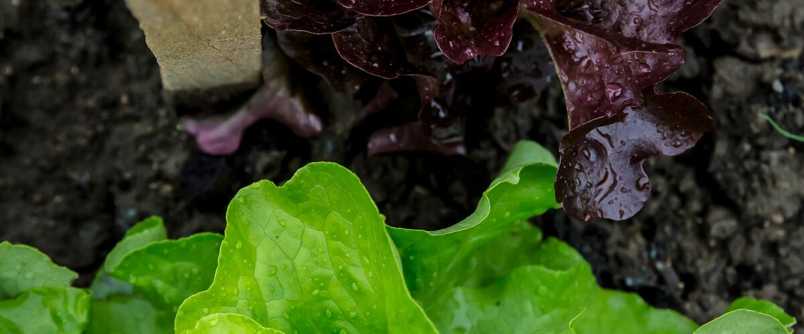

When to plant lettuce in Tri-Cities (Pasco, Kennewick, Richland), WA
Plant lettuce in the garden in Tri-Cities (Pasco, Kennewick, Richland) Mar 20 – May 15, either as seeds or as young plants started indoors Feb 6–20. For a fall harvest, plant again Aug 16–30.
- Difficulty
- Easy
- Sun
- Full sun in spring; afternoon shade in summer
- Spacing
- 8 to 10 inches apart for heads
- Planting depth
- ¼ inch deep (it needs light to sprout)
- Frost
- Handles light frost
- First harvest
- About 50 days after planting
Why these dates
Tri-Cities (Pasco, Kennewick, Richland)'s typical last spring frost is April 27. As a cool-season crop that handles light frost, this crop doesn't need to wait for that date. In the Columbia Basin and low eastern valleys, though, the soil usually isn't ready to work until about March 20.
Columbia Basin and low eastern valleys. Hot, dry summers and quick spring warm-up. Warm crops go in earlier than west of the Cascades, and irrigation matters more than rain.
How to grow lettuce in Tri-Cities (Pasco, Kennewick, Richland)
- Start seeds indoors Feb 6–20 in trays or small pots under a grow light or in your sunniest window. Or skip this step and buy young plants (starts) at a garden center.
- Harden off the young plants: about a week before planting, set them outside for a few hours a day, a little longer each day.
- Plant them in the garden Mar 20 – May 15, 8 to 10 inches apart for heads. If you plant seeds instead, sow them ¼ inch deep (it needs light to sprout).
- Water deeply once or twice a week rather than a little every day, and mulch once the soil is warm.
- Plant again Aug 16–30 for a fall harvest.
- Harvest: Pick outer leaves as needed, or cut whole heads when full. Harvest in the morning for the crispest leaves.
Key numbers
- 35–80°F (best 75°F)Soil to sprout
- ¼ inch max; needs lightSow depth
- Soil above 80°FSeeds go dormant
- 6.0–7.0Soil pH
- Mid-20s °FHardy types take
- 1–2 weeks near 32°FKeeps
How it works
The plant biology behind the advice above, in plain language.
Getting seeds to sprout
Lettuce sprouts in soil as cool as 35 to 40°F and does best around 75°F. Many varieties also need some light to germinate, so sow seeds no more than about a quarter inch deep and keep the surface moist.
In summer, soil above about 80°F can make lettuce seeds go dormant, and they simply won't come up. To sow in July or August, water the bed to cool it, sow in the evening, shade the row with a board or shade cloth until seeds sprout, or start seeds indoors where it's cooler.
Bolting and bitterness
Lettuce bolts (sends up a flower stalk) in response to heat and long days. As it does, the leaves fill with a milky sap containing bitter compounds. Once the center starts to stretch up, the bitterness can't be reversed.
To delay it, grow slow-bolting varieties for summer, give afternoon shade, keep the soil moist, and sow small batches every two to three weeks so there's always a young planting coming along.
Soil and water
Lettuce has shallow roots and grows fast, so it needs steady moisture and fertile soil with a pH of about 6.0 to 7.0. Mix in compost before planting. Dry spells make leaves tough and bitter, and uneven watering can cause tipburn, the brown, crispy leaf edges caused by a short supply of calcium during fast growth.
Cold tolerance
Most lettuces handle light frost, and hardy types like Winter Density and Arctic King take nights into the mid-20s. West of the Cascades, fall-sown lettuce under a cold frame or row cover can keep going through much of winter. Leaves that freeze solid will thaw fine if left alone; don't pick them while frozen.
Harvest and storage
Pick in the morning, when leaves are fully hydrated and crisp. Lettuce keeps best right above freezing with high humidity, so store it in a bag or container in the coldest part of the fridge, where it lasts one to two weeks.
Common questions
When is the last frost in Tri-Cities (Pasco, Kennewick, Richland), WA?
Typically April 27. In 9 years out of 10, frost is over by May 10. These are 1991–2020 NOAA climate normals for Pasco Tri-Cities Airport.
Is it too late to plant lettuce in Tri-Cities (Pasco, Kennewick, Richland)?
The spring planting window runs through May 15. If you miss it, plant again for fall from August 16 to August 30.
When should I start lettuce from seed indoors in Tri-Cities (Pasco, Kennewick, Richland)?
February 6 to February 20, which is 6 to 4 weeks before the March 20 planting date. Or buy young plants at a garden center instead.
Why won't my lettuce seeds sprout in summer?
Soil above about 80°F makes many lettuce seeds go dormant. Sow in the evening, water to cool the soil, shade the row until seedlings appear, or start seeds indoors and transplant.
Why is my lettuce bitter?
Bitterness comes as the plant starts to bolt in heat and long days, or after dry spells. Harvest before the center stretches up, grow slow-bolting varieties in summer, and keep the soil evenly moist.
Can lettuce survive frost?
Yes, most varieties handle light frost, and hardy types take nights into the mid-20s. With a cold frame or row cover, lettuce often lasts through much of winter west of the Cascades.
Also plant in Tri-Cities (Pasco, Kennewick, Richland) around the same time
Planting dates for lettuce in nearby areas
- Yakima, WA Mar 27 – May 22
- Walla Walla, WA Mar 20 – May 15
- Moses Lake, WA Mar 20 – May 15
- Ellensburg, WA Apr 1 – May 27
- Ephrata and Quincy, WA Mar 20 – May 15
- Sunnyside, Grandview and Prosser, WA Mar 20 – May 15
Full planting calendar for Tri-Cities (Pasco, Kennewick, Richland) · Lettuce in every city